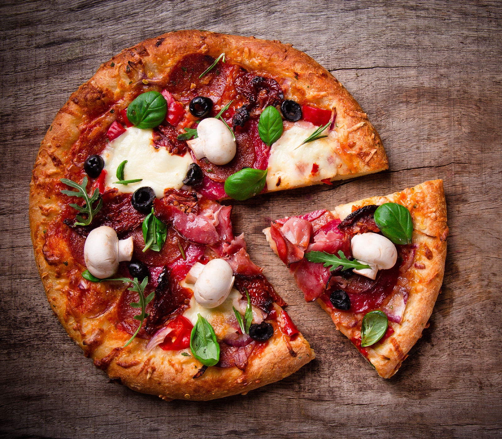

Pizza
Pizza är en klassisker som funkar vid alla tillfällen! Gör den till vardagsmiddag eller som tilltugg till helgfilmen. Enkelt recept på hemmagjord pizza med mustig tomatsås och riven ost. Denna pizza är toppad med skinka, salami och champinjoner. Du kan också variera med dina egna favoriter. Kryddas med oregano.
Ingredienser för 4 personer
Jäst: 25g
Ljummet vatten max 37°: 2½ dl
Smör & rapsolja: 2 msk
Salt: ½ tsk
Vetemjöl: 7dl
Fyllning:
• Tomatsås för pizza eller pasta: ½ dl
• Riven ost pizza: 1½ dl
• Rödlök: ¼
• Salami i skivor: 37½ g
Gör så här
1. Rör ut jästen med vattnet i en bunke. Rör i smör-&rapsolja, salt och större delen av mjölet. Arbeta till en smidig deg.
2. Låt degen jäsa övertäckt ca 30 min.
3. Förbered fyllningen under tiden.
4. Sätt ugnen på 225°. Ställ in två plåtar i ugnen så de blir varma.
Fyllning:
1. Arbeta degen smidig och kavla ut den till två stora, tunna degplattor direkt på bakplåtspapper.
2. Bred ut tomatsåsen jämnt över pizzorna. Strö över hälften av osten.
3. Skala och skiva löken tunt. Skiva champinjonerna.
4. Lägg lök, svamp, salami och skinka i rader på pizzorna. Strö över oregano och resten av osten.
5. Lägg över pizzorna på de heta plåtarna. Grädda ca 15 min. Byt plats på pizzorna en gång under gräddningen. Toppa med örter.